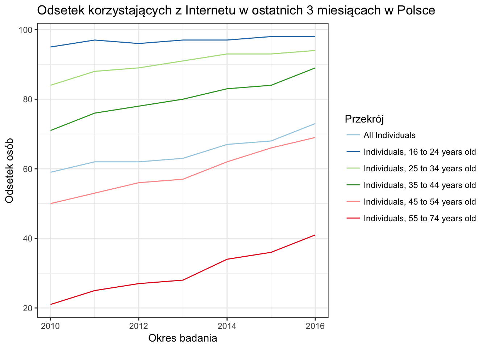

Rozdział 2 Wprowadzenie do badań internetowych
2.1 Źródła danych w statystyce
2.2 Internet
Pokrycie internetu oraz jego wykorzystanie w Europie oraz Polsce
## Table isoc_ci_ifp_iu cached at /var/folders/zv/md_yv0r16q7btfjq3frjjscc0000gn/T//Rtmpr6qIjW/eurostat/isoc_ci_ifp_iu_date_label_TF.rds
2.3 Definicje
2.3.1 Definicje dotyczące badań
Za Bethlehem and Biffignandi (2011):
- Cross-sectional survey – A survey that observes a sample from the target population at one point in time. The objective is to describe the state of the population at that moment in time.
- Longitudinal survey – A survey that observes the same sample from the target population at several points in time. The objective is to describe the changes of the population over time.
- E-mail survey – A form of data collection via the Internet in which respondents are sent a questionnaire that is part of the body text of an e-mail. The question- naire is completed by returning the e-mail after answering the questions in the text.
- Mail survey – A form of data collection where paper questionnaire forms are sent to the respondents. After completion of the questionnaires, they are returned to the research organization.
- Web survey – A form of data collection via the Internet in which respondents complete the questionnaires on the World Wide Web. The questionnaire is accessed by means of a link to a web page.
- Internet survey – A general term for various forms of data collection via the Internet. Examples are a web survey and an e-mail survey. Included also are forms of data collection that use the Internet just to transport the questionnaire and the collected data.
- Self-selection survey - A survey for which the sample has been recruited by means of self-selection. It is left to the persons themselves to decide to participate in a survey.
- Self-selection panel: A web panel for which people select themselves in response to a banner, pop-up window, or advertisement in other media (radio, TV, and newspapers); Also Opt-in panel, Volunteer panel, Access panel.
- Web panel – A survey in which the same individuals are interviewed via the web at different points in time.
- Mixed-mode survey – A survey in which various modes of data collection are combined. Modes can be used concurrently (different groups are approached by different modes) or sequentially (nonrespondents of a mode are reapproached in a different mode).
- Reference survey – A survey conducted with the objective to obtain unbiased estimates of the population distributions of auxiliary variables.
Za Callegaro, Manfreda, and Vehovar (2015):
Przykłady paneli badawczych, w których dane zbierane są za pomocą interentu Callegaro et al. (2014):
- General population panel – are the most common. These panels tend to be very large and are recruited to include the diversity of the general population, sometimes including people in hard-to-reach subpopulations. A general population panel typically is used as a frame, from which samples are drawn based on the requirements of individual studies.
- Specialty panel – are designed to permit study of subpopulations de ned by demograph- ics and/or behavioral characteristics.
- Proprietary panel – are a subclass of specialty panels in which the members participate in research for a particular company. These panels are also called client panels, community panels, and, more recently, insight communities. They provide the opportunity for a company to establish a long-term relationship with a group of consumers – typically customers of products or services offered by the company – in a setting that allows for a mix of qualitative and quantitative research, of which surveying panels’ members is just one method of research.
- Election panels – people eligible to vote are recruited, and then the panel is subsam- pled during the months before (and perhaps after) an election to study attitude formation and change. These panels resemble more traditional longitudinal panels, because each member is surveyed at each wave before and after the election
- Internet audience ratings panels – rely on passive data collection rather than surveys. Track a panelist’s browsing behavior via software installed on the panelist’s computer or by using other technologies, such as a router,6 to record the sites he or she visits, the amount of time spent on each site, and the actions taken on that site
2.4 Literatura zalecana
Zachęcam do zapoznania z poniższymi raportami:
- 2016 – Evaluating Survey Quality in Today’s Complex Environment
- 2015 – Task Force Report on Big Data
- 2014 – Current Knowledge and Considerations Regarding Survey Refusals
- 2014 – Social Media and Public Opinion Research
- 2014 – Mobile Technologies for Conducting, Augmenting and Potentially Replacing Surveys
- 2013 – Non-Probability Sampling
- 2010 – Cell Phone Task Force Report
- 2010 – Opt In Online Panel Task Force Report
Literatura
Bethlehem, Jelke, and Silvia Biffignandi. 2011. Handbook of Web Surveys. Vol. 567. John Wiley & Sons.
Callegaro, Mario, Katja Lozar Manfreda, and Vasja Vehovar. 2015. Web Survey Methodology. Sage.
Callegaro, Mario, Reginald P Baker, Jelke Bethlehem, Anja S Göritz, Jon A Krosnick, and Paul J Lavrakas. 2014. Online Panel Research: A Data Quality Perspective. John Wiley & Sons.